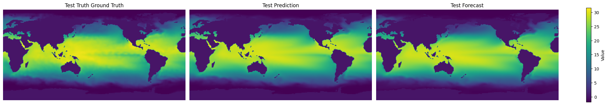

Basic SHRED Tutorial on Sea Surface Temperature#
Import Libraries#
# PYSHRED
from pyshred import DataManager, SHRED, SHREDEngine, LSTM_Forecaster
# Other helper libraries
import matplotlib.pyplot as plt
from scipy.io import loadmat
import torch
import numpy as np
Load in SST Data#
sst_data = np.load("sst_data.npy")
# Plotting a single frame
plt.figure()
plt.imshow(sst_data[0])
plt.colorbar()
plt.show()

Initialize Data Manager#
manager = DataManager(
lags = 52,
train_size = 0.8,
val_size = 0.1,
test_size = 0.1,
)
Add datasets and sensors#
manager.add_data(
data = "sst_data.npy",
id = "SST",
random = 3,
# mobile=,
# stationary=,
# measurements=,
compress=False,
)
Analyze sensor summary#
manager.sensor_summary_df
| data id | sensor_number | type | loc/traj | |
|---|---|---|---|---|
| 0 | SST | 0 | stationary (random) | (81, 131) |
| 1 | SST | 1 | stationary (random) | (155, 263) |
| 2 | SST | 2 | stationary (random) | (153, 169) |
manager.sensor_measurements_df
| SST-0 | SST-1 | SST-2 | |
|---|---|---|---|
| 0 | 28.449999 | 2.93 | 0.94 |
| 1 | 28.619999 | 3.35 | 1.09 |
| 2 | 28.279999 | 3.03 | 1.53 |
| 3 | 28.169999 | 2.95 | 1.60 |
| 4 | 28.179999 | 3.01 | 1.95 |
| ... | ... | ... | ... |
| 1395 | 29.999999 | -0.57 | -1.06 |
| 1396 | 29.769999 | -0.32 | -1.21 |
| 1397 | 29.809999 | -0.14 | -0.92 |
| 1398 | 29.889999 | 0.00 | -0.66 |
| 1399 | 29.969999 | 0.00 | -0.50 |
1400 rows × 3 columns
Get train, validation, and test set#
train_dataset, val_dataset, test_dataset= manager.prepare()
Initialize SHRED#
shred = SHRED(sequence_model="LSTM", decoder_model="MLP", latent_forecaster="LSTM_Forecaster")
Fit SHRED#
val_errors = shred.fit(train_dataset=train_dataset, val_dataset=val_dataset, num_epochs=10, sindy_regularization=0)
print('val_errors:', val_errors)
Fitting SHRED...
Epoch 1: Average training loss = 0.079502
Validation MSE (epoch 1): 0.036644
Epoch 2: Average training loss = 0.036274
Validation MSE (epoch 2): 0.034130
Epoch 3: Average training loss = 0.033781
Validation MSE (epoch 3): 0.034199
Epoch 4: Average training loss = 0.033450
Validation MSE (epoch 4): 0.033875
Epoch 5: Average training loss = 0.033123
Validation MSE (epoch 5): 0.033502
Epoch 6: Average training loss = 0.032411
Validation MSE (epoch 6): 0.032883
Epoch 7: Average training loss = 0.028727
Validation MSE (epoch 7): 0.022372
Epoch 8: Average training loss = 0.018934
Validation MSE (epoch 8): 0.016510
Epoch 9: Average training loss = 0.016190
Validation MSE (epoch 9): 0.014858
Epoch 10: Average training loss = 0.015114
Validation MSE (epoch 10): 0.015208
val_errors: [0.0366443 0.03413025 0.0341986 0.03387529 0.03350158 0.03288335
0.0223723 0.01651014 0.01485774 0.01520807]
Evaluate SHRED#
train_mse = shred.evaluate(dataset=train_dataset)
val_mse = shred.evaluate(dataset=val_dataset)
test_mse = shred.evaluate(dataset=test_dataset)
print(f"Train MSE: {train_mse:.3f}")
print(f"Val MSE: {val_mse:.3f}")
print(f"Test MSE: {test_mse:.3f}")
Train MSE: 0.012
Val MSE: 0.015
Test MSE: 0.017
Initialize SHRED Engine for Downstream Tasks#
engine = SHREDEngine(manager, shred)
Sensor Measurements to Latent Space#
test_latent_from_sensors = engine.sensor_to_latent(manager.test_sensor_measurements)
Forecast Latent Space (No Sensor Measurements)#
val_latents = engine.sensor_to_latent(manager.val_sensor_measurements)
init_latents = val_latents[-shred.latent_forecaster.seed_length:] # seed forecaster with final lag timesteps of latent space from val
h = len(manager.test_sensor_measurements)
test_latent_from_forecaster = engine.forecast_latent(h=h, init_latents=init_latents)
Decode Latent Space to Full-State Space#
test_prediction = engine.decode(test_latent_from_sensors) # latent space generated from sensor data
test_forecast = engine.decode(test_latent_from_forecaster) # latent space generated from latent forecasted (no sensor data)
Compare final frame in prediction and forecast to ground truth:
truth = sst_data[-1]
prediction = test_prediction['SST'][-1]
forecast = test_forecast['SST'][-1]
data = [truth, prediction, forecast]
titles = ["Test Truth Ground Truth", "Test Prediction", "Test Forecast"]
vmin, vmax = np.min([d.min() for d in data]), np.max([d.max() for d in data])
fig, axes = plt.subplots(1, 3, figsize=(20, 4), constrained_layout=True)
for ax, d, title in zip(axes, data, titles):
im = ax.imshow(d, vmin=vmin, vmax=vmax)
ax.set(title=title)
ax.axis("off")
fig.colorbar(im, ax=axes, label="Value", shrink=0.8)
<matplotlib.colorbar.Colorbar at 0x1c2521a0ee0>

Evaluate MSE on Ground Truth Data#
# Train
t_train = len(manager.train_sensor_measurements)
train_Y = {'SST': sst_data[0:t_train]}
train_error = engine.evaluate(manager.train_sensor_measurements, train_Y)
# Val
t_val = len(manager.test_sensor_measurements)
val_Y = {'SST': sst_data[t_train:t_train+t_val]}
val_error = engine.evaluate(manager.val_sensor_measurements, val_Y)
# Test
t_test = len(manager.test_sensor_measurements)
test_Y = {'SST': sst_data[-t_test:]}
test_error = engine.evaluate(manager.test_sensor_measurements, test_Y)
print('---------- TRAIN ----------')
print(train_error)
print('\n---------- VAL ----------')
print(val_error)
print('\n---------- TEST ----------')
print(test_error)
---------- TRAIN ----------
MSE RMSE MAE R2
dataset
SST 0.806486 0.898045 0.490421 0.365509
---------- VAL ----------
MSE RMSE MAE R2
dataset
SST 1.038167 1.018905 0.550346 -0.301883
---------- TEST ----------
MSE RMSE MAE R2
dataset
SST 1.196159 1.09369 0.597865 -0.431854